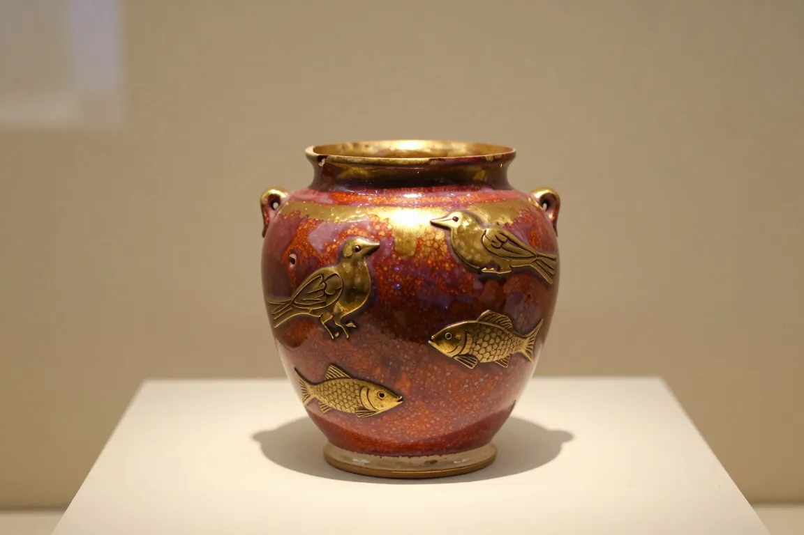

keramikk · 1872–1920 · også: Britisk kunstkeramikk, Lambeth-kunstkeramikk, De Morgan-lysterkeramikk
Håndlaget britisk kunstkeramikk etter 1872. Pottemakerne i Lambeth, Chelsea og Fulham brukte saltglasur og rubinlyster, og laget hvert stykke ett for ett med en synlig hånd.

Kjerneidé
En potte er et kunstverk når én person lager den av leire og glasur, og hånden får lov til å synes.
Designprinsipper
Lag hvert stykke for hånd, med lagerens merke eller initialer risset inn i bunnen.
Drei eller bygg formen med små uregelmessigheter på 1 til 3 mm; skjul ikke dreiestripene.
Brenn en saltglasur ved omtrent 1200 °C og la den renne til en appelsinskallflate.
Brenn en rubin- eller gulllyster i reduksjon ved omtrent 600 til 800 °C, slik at kobberet og sølvet viser seg som en hinne.
Mal eller rist inn planter, fugler, fisker og fantastiske skapninger, i en fri linje etter persiske og iznikske forbilder.
Bruk en begrenset palett på 3 eller 4 farger: blå, turkis, brun og rubin.
Hold formen enkel og flaten rik.
Plasser potten i hjemmet som et pyntegjenstand, ikke som et servise.
Antimønstre
Like fabrikkopier med et trykt mønster
Et tynt, regelmessig, hvitt gods med en klar glasur